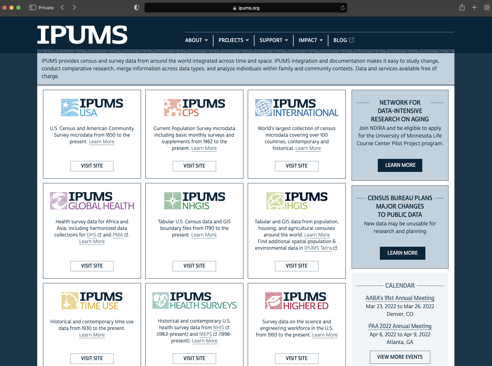
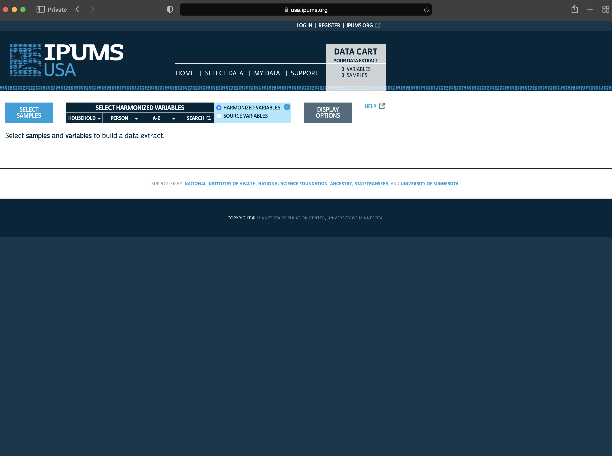
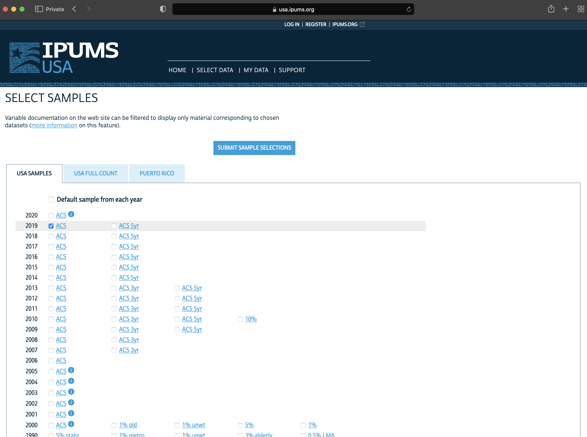
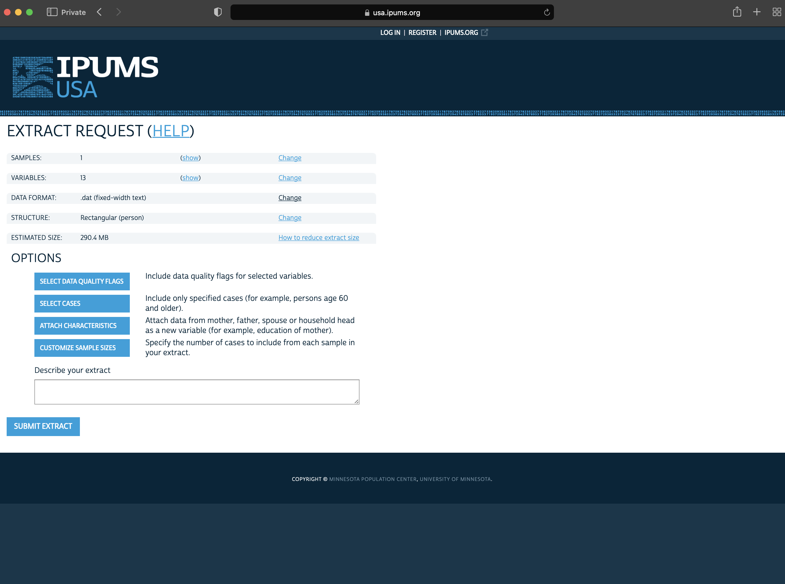
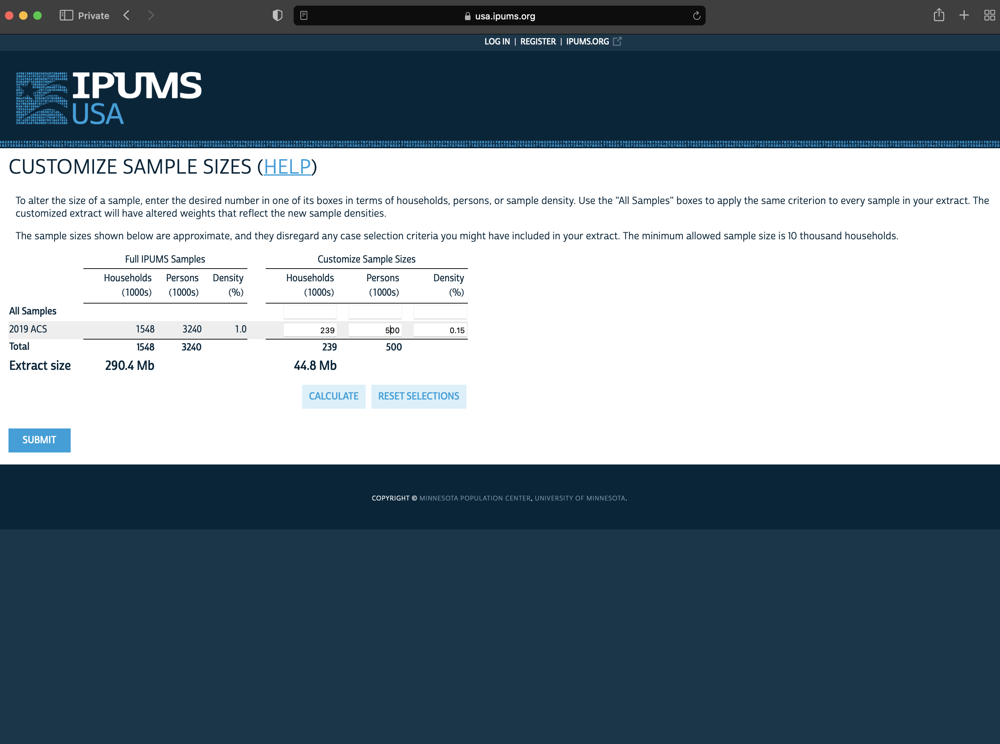
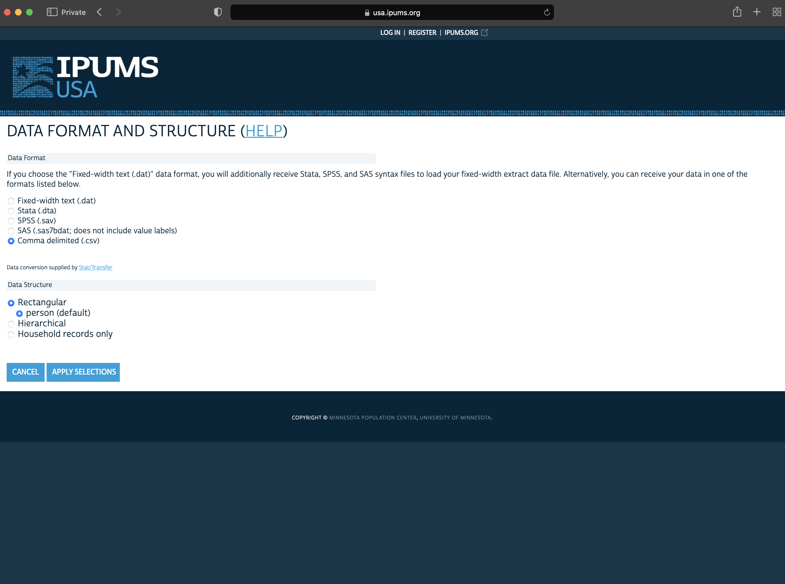

Read Atlas of AI, Chapter 3 ‘Data’, (Crawford 2021).
Read Guide to the Census of Population, 2016, Chapter 10 ‘Data quality assessment’, (Statistics Canada 2017).
Read Working-Class Households in Reading, (focus on the method and approach, not necessarily the specific results) (Bowley 1913).
Read Representative Method: The Method of Stratified Sampling and the Method of Purposive Selection, Parts I ‘Introduction’, III ‘Different Aspects of the Representative Method’, V ‘Conclusion’ and Bowley’s discussion p. 607 - 610, (Neyman 1934).
As we think about our world and telling stories about it, one of the most difficult aspects is to reduce the beautiful complexity of it into a dataset that we can use. We need to know what we are giving up when we do this. Often, we are interested in understanding the implications of some dataset, making forecasts based on it, or using that dataset to make claims about the broader world. Regardless of how we turn our world into data, we will only ever have a sample of the data that we need. Statistics provides formal approaches that we use to keep these issues front of mind.
In this chapter we first introduce statistical notions around sampling to provide a framework that we use to guide our data gathering. We then discuss censuses.
8.2 Sampling essentials
Statistics is at the heart of telling stories with data. Statisticians have spent considerable time and effort thinking about the properties that various samples of data will have and how they enable us to speak to implications for the broader population.
Let us say that we have some data. For instance, a particular toddler goes to sleep at 6:00pm every night. We might be interested to know whether that bedtime is common among all toddlers, or if we have an unusual toddler. We only have one toddler so our ability to use his bedtime to speak about all toddlers is limited.
One approach would be to talk to friends who also have toddlers. And then talk to friends of friends. How many friends, and friends of friends, do we have to ask because we can begin to feel comfortable speaking about some underlying truth of toddler bedtime?
Wu and Thompson (2020, 3) describe statistics as ‘the science of how to collect and analyze data and draw statements and conclusions about unknown populations.’ Here ‘population’ refers to some infinite group that we can never know exactly, but that we can use the probability distributions of random variables to describe the characteristics of. Another way to say this is that statistics involves getting some data and trying to say something sensible based on it.
Some of the critical terminology includes:
‘Target population’: The collection of all items about which we would like to speak.
‘Sampling frame’: A list of all the items from the target population that we could get data about.
‘Sample’: The items from the sampling frame that we get data about.
A target population is a finite set of labelled items, of size \(N\). For instance, we could hypothetically add a label to all the books in the world: ‘Book 1’, ‘Book 2’, ‘Book 3’, …, ‘Book \(N\)’. There is a difference between use of the term population here, and that of everyday usage. For instance, one sometimes hears those who work with census data say that they do not need to worry about sampling because they have the whole population of the country. This is a conflation of the terms, as what they have is the sample gathered by the census of the population of a country.
It can be difficult to define a target population. For instance, say we have been asked to find out about the consumption habits of hipsters. How can we define that target population? If someone regularly eats avocado toast, but has never drunk bullet coffee, then are they in the population? Some aspects that we might be interested in are formally defined to an extent that is not always commonly realized. For instance, whether an area is classified as rural is often formally defined by a country’s statistical agency. But other aspects are less clear. For instance, how do we classify someone as a ‘smoker’? If a 15-year-old has had 100 cigarettes over their lifetime, then we need to treat them differently than if they have had none. But if a 90-year-old has had 100 cigarettes over their lifetime, then are they likely to different to a 90-year-old who has had none? At what age, and number of cigarettes do these answers change?
Consider if we want to speak to the titles of all the books ever written. Our target population is all books ever written. But it is almost impossible for us to imagine that we could get information about the title of a book that was written in the nineteenth century, but that the author locked in their desk and never told anyone about. One sampling frame could be all books in the Library of Congress Online Catalog, another could be the 25 million that were digitized by Google (Somers 2017). And then finally, our sample may be the tens of thousands that are available through Project Gutenberg, and that we can access using gutenbergr(Robinson 2021).
To consider another example, consider wanting to speak of the attitudes of all Brazilians who live in Germany. The target population is all Brazilians who live in Germany. One possible source of information would be Facebook and so in that case, the sampling frame might be all Brazilians who live in Germany who have Facebook. And then our sample be might all Brazilians who live in Germany who have Facebook who we can gather data about. The target population and the sampling frame will be different because not all Brazilians who live in Germany will have Facebook. And the sampling frame will be different to the sample because we will likely not be able to gather data about all Brazilians who live in Germany and have Facebook.
8.2.1 Sampling in Dublin and Reading
To be clearer, we will consider two examples: a 1798 count of the number of inhabitants of Dublin, Ireland (Whitelaw 1905), and a 1912 count of working-class households in Reading, England (Bowley 1913).
In 1798 the Reverend James Whitelaw conducted a survey of Dublin, Ireland, to count its population. Whitelaw (1905) describes how population estimates had a wide variation, for instance the estimated size of London at the time ranged from 128,570 to 300,000. Reverend Whitelaw expected that the Lord Mayor of Dublin could compel the person in charge of each house to affix a list of the inhabitants of that house to the door, and then Reverend Whitelaw could simply use this.
Instead, he found that the lists were ‘frequently illegible, and generally short of the actual number by a third, or even one-half’. And so instead he recruited assistants, and they went door-to-door making their own counts. The resulting estimates are particularly informative (Figure 8.1). And the total population of Dublin in 1798 was estimated at 182,370.
Figure 8.1: Extract of the results that Reverend Whitelaw found in 1798
One aspect worth noticing is that Reverend Whitelaw includes information about class. It is difficult to know how that was determined, but it played a large role in the data collection. Reverend Whitelaw describes how the houses of ‘the middle and upper classes always contained some individual who was competent to the task [of making a list]’. But that ‘among the lower class, which forms the great mass of the population of this city, the case was very different’. It is difficult to know how Reverend Whitelaw could have known that the upper and middle classes were not representing their number, while the lower class was. It is also difficult to imagine Reverend Whitelaw going into the houses of the upper class and counting their number, as he and his assistants did for the lower classes. As always, the issue of defining the target population is a difficult one, and it seems that there may have been slightly different approaches to each class.
A little over one hundred years later, Bowley (1913) was interested in counting the number of working-class households in Reading, England. Bowley selects the sample using the following procedure (Bowley 1913, 672):
One building in ten was marked throughout the local directory in alphabetical order of streets, making about 1,950 in all. Of those about 300 were marked as shops, factories, institutions and non-residential buildings, and about 300 were found to be indexed among Principal Residents, and were so marked. The remaining 1,350 were working-class houses, and a number of volunteers set out to visit every one of these… [I]t was decided to take only one house in 20, rejecting the incomplete information as to the intermediate tenths. The visitors were instructed never to substitute another house for that marked, however difficult it proved to get information, or whatever the type of house.
Bowley (1913) continues that they ended up with information about 622 working-class households. And, having judged, based on the census that there were about 18,000 households in Reading, Bowley (1913) applies ‘[t]he multiplier twenty-one… to all the sample data to give estimates for the whole of Reading.’ Bowley (1913) explains that the reasonableness of the estimates depends ‘not on its proportion to the whole, but on its own magnitude, if the conditions of random sampling are secured, as it is believed they have been in this inquiry’. Bowley is, for instance, able to furnish information about the rent paid per week (Figure 8.2).
Figure 8.2: Extract of the results that Bowley found about rent paid by the working-class in Reading, England
8.2.2 Probabilistic sampling
Having identified a target population and a sampling frame, we need to distinguish between probability and non-probability sampling, which Neyman (1934) describes as ‘random sampling’ and ‘purposive selection’:
‘Probability sampling’: Every unit in the sampling frame has some, known, chance of being sampled and the specific sample is obtained randomly based on these chances. Note that these chances do not necessarily need to be same for each unit.
‘Non-probability sampling’: Units from the sampling frame are sampled based on convenience, quotas, judgement, or other non-random processes.
Often the difference between probability and non-probability sampling is one of degree. For instance, we cannot often forcibly obtain data and so there is almost always an aspect of volunteering. Even when there are penalties for not providing data, such as the case for completing a census form in many countries, it is difficult for even a government to force people to fill it out completely or truthfully. One reason that the Randomized Control Trial revolution, discussed in Chapter @ref(hunt-data), was needed was due to a lack of probability sampling. The most important aspect to be clear about with probability sampling is the role of uncertainty. This allows us to make claims about the population, based on our sample, with known amounts of error. The trade-off is that probability sampling is often expensive and difficult.
To add some more specificity to our discussion, following Lohr (2019, 27) it may help to consider the numbers 1 to 100 and let us define that as our target population. With simple random sampling, every unit has the same chance of being included. In this case it is 20 per cent. We would expect to have around 20 units in our sample, or around 1 in 5 compared with our target population.
# A tibble: 100 × 2
unit simple_random_sampling
<int> <chr>
1 1 Not included
2 2 Not included
3 3 Not included
4 4 Not included
5 5 Not included
6 6 Not included
7 7 Not included
8 8 Not included
9 9 Not included
10 10 Not included
# … with 90 more rows
With systematic sampling, as was used by Bowley (1913), we proceed by selecting some value, say 5. We randomly pick a starting point in units 1 to 5, say 3. And we then include every fifth unit. That starting point is usually randomly selecting.
set.seed(853)starting_point <-sample(x =c(1:5), size =1)illustrative_sampling <- illustrative_sampling |>mutate(systematic_sampling =if_else(row_number() %in%seq.int(from = starting_point, to =100, by =5), "Included", "Not included") )illustrative_sampling
# A tibble: 100 × 3
unit simple_random_sampling systematic_sampling
<int> <chr> <chr>
1 1 Not included Included
2 2 Not included Not included
3 3 Not included Not included
4 4 Not included Not included
5 5 Not included Not included
6 6 Not included Included
7 7 Not included Not included
8 8 Not included Not included
9 9 Not included Not included
10 10 Not included Not included
# … with 90 more rows
When we consider our population, it will typically have some grouping. This may be as straight-forward as a country having states, provinces, counties, or statistical districts; a university having faculties and departments; and humans having age-groups. A stratified structure is one in which we can divide the population into mutually exclusive and collectively exhaustive sub-populations, or strata.
We use stratification to help with the efficiency of sampling or with the balance of the survey. For instance, the population of the US is around 335 million, with 40 million being in California, while Wyoming as around half a million. So even a survey of 10,000 responses would only expect to have 15 responses from Wyoming, which could make inference about Wyoming difficult. We could use stratification to ensure there are 200 responses from each of the 50 US states. We would use random sampling within each state to select the person about whom data will be gathered.
In our case, we will stratify our illustration, we will consider that our strata are the 10s, that is, 1 to 10 is one stratum, 11 to 20 is another, and so on. We will use simple random sampling within these strata to select two units.
# A tibble: 100 × 4
unit simple_random_sampling systematic_sampling stratified_sampling
<int> <chr> <chr> <chr>
1 1 Not included Included Included
2 2 Not included Not included Not included
3 3 Not included Not included Not included
4 4 Not included Not included Not included
5 5 Not included Not included Not included
6 6 Not included Included Not included
7 7 Not included Not included Not included
8 8 Not included Not included Not included
9 9 Not included Not included Included
10 10 Not included Not included Not included
# … with 90 more rows
And finally, we can also take advantage of some clusters that may exist in our dataset. Like strata, clusters are collectively exhaustive and mutually exclusive. Our examples from earlier, of states, departments, and age-groups remain valid as clusters. However, it is our intentions toward these groups that is different. Specific, with cluster sampling, we do not intend to collect data from every cluster, whereas with stratified sampling we do. With stratified sampling we look at every stratum and conduct simple random sampling within each strata to select the sample. With cluster sampling we conduct simple random sampling to select clusters of interest. We can then either sample every unit in those selected clusters or use simple random sampling, within the selected clusters, to select units. That all said, this difference can become less clear in practice, especially ex post.
In our case, we will cluster our illustration again based on the 10s. We will use simple random sampling to select two clusters for which we will use the entire cluster.
# A tibble: 100 × 5
unit simple_random_sampl… systematic_samp… stratified_samp… cluster_sampling
<int> <chr> <chr> <chr> <chr>
1 1 Not included Included Included Included
2 2 Not included Not included Not included Included
3 3 Not included Not included Not included Included
4 4 Not included Not included Not included Included
5 5 Not included Not included Not included Included
6 6 Not included Included Not included Included
7 7 Not included Not included Not included Included
8 8 Not included Not included Not included Included
9 9 Not included Not included Included Included
10 10 Not included Not included Not included Included
# … with 90 more rows
At this point we can illustrate the differences between our approaches (Figure 8.3).
Figure 8.3: Illustrative example of simple random sampling, systematic sampling, stratified sampling, and cluster sampling over the numbers from 1 to 100
Having established our sample, we typically want to use it to make claims about the population. Neyman (1934, 561) goes further and says that ‘[o]bviously the problem of the representative method is par excellence the problem of statistical estimation. We are interested in characteristics of a certain population, such \(\pi\), which it is either impossible or at least very difficult to study in detail, and we try to estimate these characteristics basing our judgment on the sample.’
In particular, we would typically be interested to estimate a population mean and variance.
Scaling up can be used when we are interested in using a count from our sample to imply some total count for the population. We saw this in Bowley (1913) where the ratio of the number of households in the sample, compared with the number of households known from the census, is 21, and this information is used to scale up the sample.
To consider an example, perhaps we were interested in the sum of the numbers from 1 to 100. We know that our samples are of size 20, and so need to be scaled up five times (Table 8.1).
Table 8.1: Sum of the numbers in each sample, and implied sum of population
Sampling method
Sum of sample
Implied population sum
simple_random_sampling
840
4,200
systematic_sampling
970
4,850
stratified_sampling
979
4,895
cluster_sampling
910
4,550
The actual sum of the population is 5,050. We can obtain this using a trick, attributed to Euler, who noticed that the sum of 1 to any number can be quickly obtained by finding the middle number and then multiplying that by one plus the number. So, in this case, it 50*101. Alternatively we can use R: sum(1:100).
Our estimate of the population sum, based on the scaling, are especially revealing. The closest is stratified sample, closely followed by systematic sampling. Cluster sampling is a little over 10 per cent off, while simple random sampling is a little further away. To get close, it is important that our sampling method gets as many of the higher values as possible. And so stratified and systematic sampling, both of which ensured that we had unit from the larger numbers did particularly well. The performance of cluster and simple random sampling would depend on the particular clusters, and units, selected. In this case, stratified and systematic sampling ensured that our estimate of the sum of the population, would not be too far away from the actual population sum.
This approach has a long history. For instance, Adolphe Quetelet, the nineteenth century astronomer, mathematician, statistician, and sociologist proposed one. Stigler (1986, 163) describes how by 1826 Quetelet had become involved in the statistical bureau, and they were planning for a census. Quetelet argued that births and deaths were well known, but migration was not. He proposed an approach based on counts in specific geographies, which could then be scaled up to the whole country. The criticism of the plan focused on the difficulty of selecting appropriate geographies, which we saw also in our example of cluster sampling. The criticism was reasonable, and even today, some two hundred years later, something that we should keep front of mind, (Stigler 1986):
He [Quetelet] was acutely aware of the infinite number of factors that could affect the quantities he wished to measure, and he lacked the information that could tell him which were indeed important. He… was reluctant to group together as homogenous, data that he had reason to believe was not… To be aware of a myriad of potentially important factors, without knowing which are truly important and how their effect may be felt, is often to fear the worst’…. He [Quetelet] could not bring himself to treat large regions as homogeneous, [and so] he could not think of a single rate as applying to a large area
We are able to do this scaling up when we know the population total, but if we do not know that, or we have concerns around the precision of that approach then we may use a ratio estimator.
Ratio estimators also have a long history. For instance, in 1802 they were used by Pierre-Simon Laplace to estimate the total population of France, based on the ratio of the number of registered births, which was known throughout the country, to the number of inhabitants, which was only know for certain communes. He calculated this ratio for the three communes, and then scaled it, based on knowing the number of births across the whole country to produce an estimate of the population of France (Lohr 2019).
In particular, a ratio estimator of some population parameter is the ratio of two means. For instance, we may have some information on the number of hours that a toddler sleeps overnight, \(x\), and the number of hours their parents sleep overnight \(y\) over a 30 day period.
While acknowledging that it is a spectrum, much of statistics was developed based on probability sampling. But a considerable amount of modern sampling is done using non-probability sampling. A common approach is to use Facebook and other advertisements to recruit a panel of respondents in exchange for compensation. This panel is then the group that is sent various surveys as necessary. But think for a moment about the implications of this. For instance, what type of people are likely to respond to such an advertisement? Is the richest person in the world likely to respond? Are especially young or especially old people likely to respond? In some cases, it is possible to do a census. Nation-states typically do one every five to ten years. But there is a reason that it is only nation states that do them—they are expensive, time-consuming, and surprisingly, they are sometimes not as accurate as we may hope because of how general they need to be.
8.2.3 Non-probability samples
Non-probability samples have an important role to play because they are typically cheaper and quicker to obtain than probability samples. Further, as we have discussed, the difference between probability and non-probability samples is sometimes one of degree, rather than dichotomy. In any case, non-probability samples are legitimate and appropriate for some tasks provided one is clear about the trade-offs and ensure transparency (Baker et al. 2013).
Convenience sampling involves gathering data from a sample that is easy to access. For instance, one often asks one’s friends and family to fill out a survey as a way of testing it before more wide-scale distribution. If instead we were to analyze such a sample, then we would likely be using convenience sampling.
The main issue with convenience sampling is that it is unlikely to be able to speak to much of a broader population than those who filled out the survey. There are also tricky ethical considerations, and typically a lack of anonymity which may further bias the results. On the other hand, it can be useful to cheaply get a quick sense of a situation while rolling out sampling approaches likely to be more broadly useful.
Quota sampling occurs when we have strata, but we do not use random sampling within those strata to select the unit. For instance, if we again stratified the US based on state, but then instead of ensuring that everyone in Wyoming had the chance to be chosen for that stratum, just picked people at Jackson Hole. Again, there are some advantages to this approach, especially in terms of speed and cost, but the resulting sample is likely biased in various ways.
As the saying goes, birds of a feather flock together. And we can take advantage of that in our sampling. Although Handcock and Gile (2011) describe various uses before this, and it is notoriously difficult to define attribution in multidisciplinary work, snowball sampling is nicely defined by Goodman (1961). Following Goodman (1961), to conduct snowball sampling, we first draw a random sample from the sampling frame. Each of these is asked to name \(k\) others also in the sample population, but not in that initial draw, and these form the ‘first stage’. Each individual in the first stage is then similarly asked to name \(k\) others who are also in the sample population, but again not in the random draw or the first stage, and these form the ‘second stage’. We need to have specified the number of stages, \(s\), and also \(k\) ahead of time.
Respondent-driven sampling was developed by Heckathorn (1997) to focus on hidden populations, which are those for which: 1) there is no sampling frame and 2) being known to be in the sampling population could have a negative effect. For instance, we could imagine various countries in which it would be difficult to sample from the gay population or those who have had abortions because it is illegal. Respondent-driven sampling differs from snowball sampling in two ways: 1) In addition to compensation for their own response, as is the case with snowball sampling, respondent-driven sampling typically also involves compensation for recruiting others. 2) Respondents are not asked to provide information about others to the investigator, but instead recruit them into the study. Selection into the sample occurs not from sampling frame, but instead from the networks of those already in the sample (Salganik and Heckathorn 2004).
Having established the foundations of sampling, which should remain front of mind, we turn to describe some approaches to gathering data. These will largely represent convenience samples.
8.3 Censuses
There are a variety of sources of data that have been produced for the purposes of being used as datasets. One thinks here especially of censuses. Whitby (2020, 30–31) provides an enthralling overview, describing how the earliest censuses that we have written suggestions of are from China’s Yellow River valley, and that they were used for more than just purposes of taxation and conscription. Whitby (2020) also highlights the links between censuses and religion, quoting from Book of Luke ‘In those days Caesar Augustus issued a decree that a census should be taken of the entire Roman world’, which led to David and Mary travelling to Bethlehem. The
Taxation was a substantial motivator for censuses. Jones (1953) describes how census records survive that ‘were probably engraved in the late third or early fourth century A.D., when Diocletian and his colleagues and successors are known to have been active in carrying out censuses to serve as the basis of their new system of taxation’. And detailed records of this sort have been abused. For instance, Luebke and Milton (1994) say how ‘(t)he Nazi regime gathered its information with two relatively conventional tools of modern administration: the national census and police registration’.
Another source of data deliberately put together to be a dataset include economic conditions such as unemployment, inflation, and GDP. Interestingly, Rockoff (2019) describes how these economic statistics were not actually developed by the federal government, even though federal governments typically eventually took over that role. Typically, these sources of data are put together by governments. They have the powers of the state behind them which enables them to be thorough in a way that other datasets cannot be, and similarly bring a specific perspective. That is not to say that census data are unimpeachable, and common errors include under- and over-enumeration, as well as misreporting [steckel1991quality].
Another, similarly, large and established source of data are from long-running large surveys. These are conducted on a regular basis, and while not usually directly conducted by the government, they are usually funded, one way or another, by the government. For instance, here we often think of electoral surveys, such as the Canadian Election Study, which has run in association with every federal election since 1965, and similarly the British Election Study which has been associated with every general election since 1964.
Finally, there has been a large push toward open data in government. While the term has become contentious because of how it has occurred in practice, the underlying principle—that the government should make available the data that is has—is undeniable. In this chapter we cover these datasets, which we term ‘farmed data’. They are typically fairly nicely put together and the work of collecting, preparing and cleaning these datasets has typically been done. They are also, usually, conducted on a known release cycle. For instance, most developed countries release unemployment and inflation dataset on a monthly basis, GDP on a quarterly basis, and a census every five to ten years.
While these datasets have always been useful, they were developed for a time when much analysis was conducted without the use of scripts and programming languages. A cottage industry of R package development has sprung up around making it easier to get these datasets into R. In this chapter we cover a few that are especially useful.
It is important to recognize that data are not neutral. Thinking clearly about who is included in the dataset, and who is systematically excluded, is critical. As Crawford (2021, 121) says:
The way data is understood, captured, classified, and named is fundamentally an act of world-making and containment…. The myth of data collection as a benevolent practice… has obscured its operations of power, protecting those who profit most while avoiding responsibility for its consequences.
At this point, it is worth briefly discussing the role of sex and gender in survey research, following Kennedy et al. (2020). Sex is based on biological attributes, while gender is socially constructed. We are likely interested in the effect of gender on our dependent variable. Moving away from a non-binary concept of gender, in terms of official statistics, is only something that has happened recently. As a researcher one of the problems of insisting on a binary is that, as Kennedy et al. (2020, 2) say ‘…when measuring gender with simply two categories, there is a failure to capture the unique experiences of those who do not identify as either male or female, or for those whose gender does not align with their sex classification.’. A researcher has a variety of ways of proceeding, and Kennedy et al. (2020) discuss these based on: ethics, accuracy, practicality, and flexibility. However, ‘there is no single good solution that can be applied to all situations. Instead, it is important to recognize that there is a compromise between ethical concerns, statistical concerns, and the most appropriate decision will be reflective of this’ [p. 16]. The most important consideration is to ensure appropriate ‘respect and consideration for the survey respondent’.
8.3.1 Canada
The first census in Canada was conducted in 1666. There were 3,215 inhabitants that were counted, and the census asked about age, sex, marital status, and occupation (Statistics Canada 2017). In association with Confederation, in 1867 a decennial census was required so that political representatives could be allocated for the new Parliament. Regular censuses have occurred since then, the most recent in 2021.
We can explore some data on languages spoken in Canada from the 2016 Census using canlang(Timbers 2020). This package is not yet available on CRAN, and so we install it from GitHub, using devtools(Wickham, Hester, and Chang 2020).
We can quickly see the top-10 most common languages to have as mother tongue.
can_lang |>slice_max(mother_tongue, n =10) |>select(language, mother_tongue)
# A tibble: 10 × 2
language mother_tongue
<chr> <dbl>
1 English 19460850
2 French 7166700
3 Mandarin 592040
4 Cantonese 565270
5 Punjabi (Panjabi) 501680
6 Spanish 458850
7 Tagalog (Pilipino, Filipino) 431385
8 Arabic 419890
9 German 384040
10 Italian 375635
We could combine two datasets together ‘region_lang’ and ‘region_data’, to see if the five most-common languages differ between the largest region, Toronto, and the smallest, Belleville.
region_lang |>left_join(region_data, by ="region") |>slice_max(c(population)) |>slice_max(mother_tongue, n =5) |>select(region, language, mother_tongue, population) |>mutate(prop = mother_tongue / population)
# A tibble: 5 × 5
region language mother_tongue population prop
<chr> <chr> <dbl> <dbl> <dbl>
1 Toronto English 3061820 5928040 0.516
2 Toronto Cantonese 247710 5928040 0.0418
3 Toronto Mandarin 227085 5928040 0.0383
4 Toronto Punjabi (Panjabi) 171225 5928040 0.0289
5 Toronto Italian 151415 5928040 0.0255
region_lang |>left_join(region_data, by ="region") |>slice_min(c(population)) |>slice_max(mother_tongue, n =5) |>select(region, language, mother_tongue, population) |>mutate(prop = mother_tongue / population)
# A tibble: 5 × 5
region language mother_tongue population prop
<chr> <chr> <dbl> <dbl> <dbl>
1 Belleville English 93655 103472 0.905
2 Belleville French 2675 103472 0.0259
3 Belleville German 635 103472 0.00614
4 Belleville Dutch 600 103472 0.00580
5 Belleville Spanish 350 103472 0.00338
We can see a considerable difference between the proportions, with a little over 50 per cent of those in Toronto having English as their mother tongue, while that is the case for around 90 per cent of those in Belleville.
In general, data from Canadian censuses are not as easily available as in other countries. Statistics Canada, which is the government agency that is responsible for the census and other official statistics freely provides a Individuals File from the 2016 census as a Public Use Microdata File (PUMF), but only in response to a request. And while it is a 2.7 per cent sample from the 2016 census, this PUMF provides limited detail.
Another way to access data from the Canadian census is to use cancensus(von Bergmann, Shkolnik, and Jacobs 2021). This package can be installed from CRAN. It requires an API key, which can be requested by creating an account and then going to ‘edit profile’. The package has a helper function set_api_key("ADD_YOUR_API_KEY_HERE", install = TRUE) that makes it easier to add the API key to an ‘.Renviron’ file, in the same way that we did in Chapter @ref(gather-data).
We can use get_census() to get census data. We need to specify a census of interest, and a variety of other arguments. For instance, we could get data from the 2016 census about Ontario, which is the largest Canadian province by population.
library(tidyverse)library(cancensus)ontario_population <-get_census(dataset ="CA16",level ="Regions",vectors ="v_CA16_1", regions =list(PR=c('35') ) )
Downloading: 120 B
Downloading: 120 B
Downloading: 120 B
Downloading: 120 B
Downloading: 120 B
Downloading: 120 B
ontario_population
# A tibble: 0 × 0
Data from the 1996, 2001, 2006, 2011, and 2016 censuses are available, and list_census_datasets() provides the metadata that we need to provide to get_census() to access these. Data are available based on a variety of regions, and list_census_regions() provides the metadata that we need. And finally, list_census_vectors() provides the metadata about the variables that available.
8.3.2 USA
The requirement for a US Census is included in the US Constitution, and decent, though clunky, access is provided. But the US is in the envious situation where there is usually a better approach than going through the national statistical agency of IPUMS. IPUMS provides access to a wide range of datasets, including international census microdata. In the specific case of the US, the American Community Survey (ACS) is a survey that is comparable to the questions asked on many censuses, but it is that are available on an annual basis, compared with a census which could be quite out-of-date by the time the data are available. It ends up with millions of responses each year. Although the ACS is smaller than a census, the advantage is that it is available on a more timely basis. We will access the ACS through IPUMS.
Go to IPUMS, then ‘IPUMS USA’, and select ‘get data’ (Figure 8.4).

Figure 8.4: The IPUMS homepage, with IPUMS USA shown in the top left box
We are interested in a sample, so go to ‘SELECT SAMPLE’, and un-select ‘Default sample from each year’ and instead select ‘2019 ACS’ and then ‘SUBMIT SAMPLE SELECTIONS’ (Figure 8.5).

Figure 8.5: Selecting a sample from IPUMS USA and specifying interest in the 2019 ACS

We might be interested in data based on state. So we would begin by looking at ‘HOUSEHOLD’ variables and selecting ‘GEOGRAPHIC’ (Figure 8.6).
Figure 8.6: Specifying that we are interested in the state
We add ‘STATEICP’ to our ‘cart’ by clicking the plus, which will then turn into a tick (Figure 8.7).
Figure 8.7: Adding STATEICP to our cart
We might then be interested in data on a ‘PERSON’ basis, for instance, ‘DEMOGRAPHIC’ variables such as ‘AGE’, which we should add to our cart. Still on a ‘PERSON’ basis, we might be interested in ‘INCOME’, for instance, ‘Total personal income’ ‘INCTOT’ and we could add that to our cart (Figure 8.8).
Figure 8.8: Adding additional demographic variables that are available on an individual basis
When we are done, we can ‘VIEW CART’, and then ‘CREATE DATA EXTRACT’ (Figure 8.9). At this point there are two aspects that we likely want to change:
Change the ‘DATA FORMAT’ from dat to csv (Figure 8.10).
Customize the sample size as we likely do not need three million responses, and could just change it to, say, 500,000 (Figure 8.11).

Figure 8.9: Beginning the checkout process

Figure 8.10: Specifying that we are interested in CSV files

Figure 8.11: Reducing the sample size from three million responses to half a million
Finally, we want to include a descriptive name for the extract, for instance, ‘2022-02-06: Income based on state and age’, which specifies the date we made the extract and what is in the extract. After that we can ‘SUBMIT EXTRACT’.
We will be asked to log in or create an account, and after doing that will be able to submit the request. IPUMS will email when the extract is available, after which we can download it and read it into R in the usual way. It is critical that we cite this dataset when we use it (Ruggles et al. 2021).
Incredibly, full count, that is the entire census, data are available through IPUMS for the US censuses conducted on: 1850, 1860, 1870, 1880, 1900, 1910, 1920, 1930, and 1940. Most of the 1890 census records were destroyed due to a fire in 1921. 1 per cent samples are available for these years, and through to 1990. And then ACS data are available from 2000.
8.4 Exercises and tutorial
8.4.1 Exercises
Please identify three other sources of data that you are interested in and describe where are they available (please include a link or code)?
Please focus on one of those sources. What steps do you have to go through in order to get a dataset that can be analyzed in R?
Let us say you take a job at RBC (a Canadian bank) and they already have some quantitative data for you to use. What are some questions that you should explore when deciding whether that data will be useful to you?
Write three points (you are welcome to use dot points) about why government data may be especially useful?
Please pick a government of interest and find their inflation statistics. To what extent do you know about how these data were gathered?
With reference to Chen et al. (2019) and Martinez (2019) to what extent do you think we can trust government statistics? Please mention at least three governments in your answer.
The 2021 census in Canada asked, firstly, ‘What was this person’s sex at birth? Sex refers to sex assigned at birth. Male/Female’, and then ‘What is this person’s gender? Refers to current gender which may be different from sex assigned at birth and may be different from what is indicated on legal documents. Male/Female/Or please specify this person’s gender (space for a typed or handwritten answer)’. With reference to Statistics Canada (2020), please discuss the extent to which you think this is an appropriate way for census to have proceeded. You are welcome to discuss the case of a different country if you are more familiar with that.
Pretend that we have conducted a survey of everyone in Canada, where we asked for age, sex, and gender. Your friend claims that there is no need to worry about uncertainty ‘because we have the whole population’. Is your friend right or wrong, and why?
8.4.2 Tutorial
Use IPUMS to access the ACS. Download some data that are of interest and write a two-to-three page paper analyzing it.
Baker, Reg, J. Michael Brick, Nancy A. Bates, Mike Battaglia, Mick P. Couper, Jill A. Dever, Krista J. Gile, and Roger Tourangeau. 2013. “Summary Report of the AAPOR Task Force on Non-probability Sampling.”Journal of Survey Statistics and Methodology 1 (2): 90–143. https://doi.org/10.1093/jssam/smt008.
Bowley, Arthur Lyon. 1913. “Working-Class Households in Reading.”Journal of the Royal Statistical Society 76 (7): 672–701.
Chen, Wei, Xilu Chen, Chang-Tai Hsieh, and Zheng Song. 2019. “A Forensic Examination of China’s National Accounts.” National Bureau of Economic Research.
Crawford, Kate. 2021. Atlas of AI. Yale University Press.
Goodman, Leo A. 1961. “Snowball Sampling.”The Annals of Mathematical Statistics, 148–70.
Handcock, Mark S, and Krista J Gile. 2011. “Comment: On the Concept of Snowball Sampling.”Sociological Methodology 41 (1): 367–71.
Heckathorn, Douglas D. 1997. “Respondent-Driven Sampling: A New Approach to the Study of Hidden Populations.”Social Problems 44 (2): 174–99.
Jones, Arnold HM. 1953. “Census Records of the Later Roman Empire.”The Journal of Roman Studies 43 (1-2): 49–64.
Kennedy, Lauren, Katharine Khanna, Daniel Simpson, and Andrew Gelman. 2020. “Using Sex and Gender in Survey Adjustment.”https://arxiv.org/abs/2009.14401.
Lohr, Sharon L. 2019. Sampling: Design and Analysis. CRC Press.
Luebke, David Martin, and Sybil Milton. 1994. “Locating the Victim: An Overview of Census-Taking, Tabulation Technology, and Persecution in Nazi Germany.”IEEE Annals of the History of Computing 16 (3): 25.
Martinez, Luis R. 2019. “How Much Should We Trust the Dictator’s GDP Growth Estimates?”Available at SSRN 3093296.
Neyman, Jerzy. 1934. “On the Two Different Aspects of the Representative Method: The Method of Stratified Sampling and the Method of Purposive Selection.”Journal of the Royal Statistical Society 97 (4): 558–625.
Rockoff, Hugh. 2019. “On the Controversies Behind the Origins of the Federal Economic Statistics.”Journal of Economic Perspectives 33 (1): 147–64.
Ruggles, Steven, Sarah Flood, Sophia Foster, Ronald Goeken, Jose Pacas, Megan Schouweiler, and Matthew Sobek. 2021. “IPUMS USA: Version 11.0.” Minneapolis, MN: IPUMS. https://doi.org/10.18128/D010.V11.0.
Salganik, Matthew J, and Douglas D Heckathorn. 2004. “Sampling and Estimation in Hidden Populations Using Respondent-Driven Sampling.”Sociological Methodology 34 (1): 193–240.
Somers, James. 2017. “Torching the Modern-Day Library of Alexandria.”The Atlantic 20.
von Bergmann, Jens, Dmitry Shkolnik, and Aaron Jacobs. 2021. Cancensus: R Package to Access, Retrieve, and Work with Canadian Census Data and Geography. https://mountainmath.github.io/cancensus/.
Whitby, Andrew. 2020. The Sum of the People. Basic Books.
Whitelaw, James. 1905. An Essay on the Population of Dublin. Being the Result of an Actual Survey Taken in 1798, with Great Care and Precision, and Arranged in a Manner Entirely New. Graisberry; Campbell.
Wickham, Hadley, Mara Averick, Jennifer Bryan, Winston Chang, Lucy D’Agostino McGowan, Romain François, Garrett Grolemund, et al. 2019. “Welcome to the tidyverse.”Journal of Open Source Software 4 (43): 1686. https://doi.org/10.21105/joss.01686.